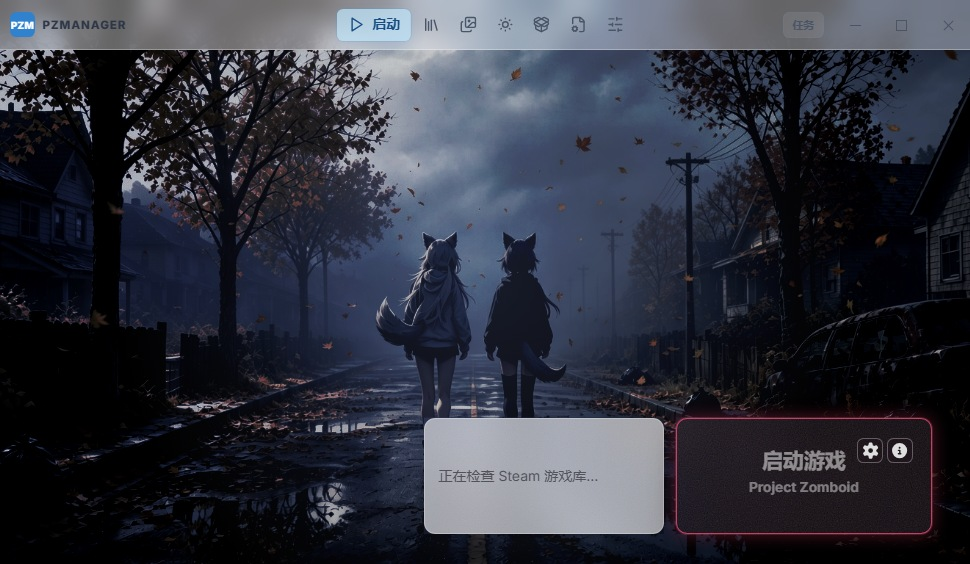

PZM
Project Zomboid · Launcher & Mod Manager
PZMANAGER
把启动、模组、资源与截图，收进一个窗口。
Windows x64
Tauri 2
Rust + React
无 Electron
单文件安装
← → 翻页 · F 全屏 · 任意画面可点击或拖入截图
Launch
一眼启动
壁纸、账户、内存、参数都在这一屏，不用翻设置。
- Steam 账户自动识别，账号可一键遮罩。
- 内存上限滑块带推荐线，拖到多少写进启动配置。
- 启动参数逐条增删，按顺序拼接。
- 启动 / 停止一键切换，底部显示本次启动耗时。

+
01-launch.jpg
启动页整窗截图 · 建议 970×564（应用最小窗口）
点击 / 拖入图片可替换
Look & Feel
看得清，也调得动
菜单与弹层是带真背景模糊的亚克力：半透明底 + 细颗粒 + 顶边高光。
- 多级子菜单同一套材质，不会一层一个样。
- 模糊度 0–200%：面板、菜单、弹层、标题栏一起变。
- 字体对比度 0–100%：背景再花也能把字压清楚。
- 四季动态壁纸：随时辰与季节换光，也能手动固定。
+
02-menus.jpg
打开菜单 / 弹层的整窗截图 · 建议 970×564（最小窗口）
点击 / 拖入图片可替换
Mods
模组管理
- JAR / Lua 两个列表，行内勾选即启用，不必进游戏试。
- 批量操作：全选、反选、批量启停，结果可直接存成预设。
- 冲突与依赖：JAR 冲突检测、缺失依赖提示，细节在开发者模式展开。
- 休眠模组：不想删又不想加载的，挂起即可。

+
04-mods.jpg
模组管理页（JAR 或 Lua 列表）· 建议 970×564（最小窗口）
点击 / 拖入图片可替换
Shaders & Resources
光影与资源
- Modrinth 光影包：搜索、筛选、直接下载。
- 多线程下载，进度进后台任务中心，不挡你操作。
- 一键落位到 Viewpoint 的光影目录，省掉手动解压。
- 自定义下载：任意链接、并行线程数、保存目录。

+
05-resources.jpg
光影 / 资源中心页面 · 建议 970×564（最小窗口）
点击 / 拖入图片可替换
Workshop
创意工坊
- 标签包含 / 排除、排序与时间范围，筛出真正想要的那批。
- 详情在窗口内打开，正文可按设置的语言翻译。
- 工坊背景：看中的壁纸可以直接设为启动页背景。
- 右键菜单：在 Steam 打开，或在窗口内看详情。

+
06-workshop.jpg
创意工坊列表或详情 · 建议 970×564（最小窗口）
点击 / 拖入图片可替换
Screenshots
截图管理
- 扫描 Viewpoint 截图目录，缩略图直接铺开。
- 单击预览，大图不挤列表。
- 一键复制到剪贴板，发群里不用找文件夹。

+
07-shots.jpg
截图管理页 · 建议 970×564（最小窗口）
点击 / 拖入图片可替换
Settings
该调的都能调
- 通用：开发者模式、翻译语言、字体对比度、模糊度。
- 翻译器：自建文本翻译，Google 优先、Yandex 兜底。
- 控制台：覆盖层会话状态与本次运行的通知记录。
- 启动：极速启动、静默内存清理、加载器方案。

+
03-settings.jpg
设置 › 通用（对比度 / 模糊度）· 建议 970×564（最小窗口）
点击 / 拖入图片可替换
Under the hood
轻，但有底座
没有 Electron。壳是 Tauri 2，重活都在 Rust 侧；需要动游戏的地方才下场。
SHELL
Tauri 2 + Rust
原生窗口、无边框自绘标题栏，安装包和常驻内存都远小于同类工具；前端仍是熟悉的 React。
OVERLAY
覆盖层注入
Rust 侧注入 DLL（MinHook + JNI），把会话状态、加载进度叠在游戏窗口里，不必切出来看。
FAST LAUNCH
极速启动（实验性）
把模组与补丁清单缓存下来，短路 ZombieBuddy 的 ClassGraph 扫描；任何异常都自动回退原生扫描。
仅 Windows x64 · 启动、模组、资源、截图与设置共用一套无边框窗口
Ready
打开它，
然后启动游戏。
这一页 PPT 本身就是个网页：任意画面点一下或把截图拖进来就能替换，按 E 导出成单文件 HTML 发给别人。
PZManager
功能介绍
v0.1.0
H 查看全部快捷键 · E 导出单文件 HTML